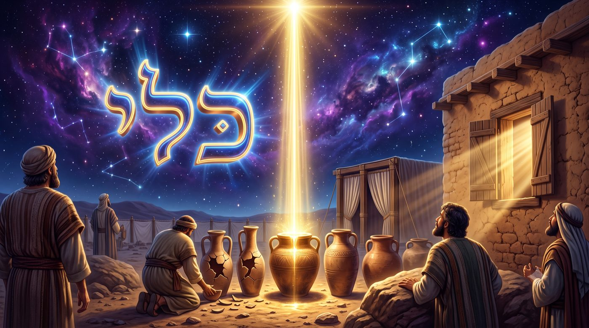
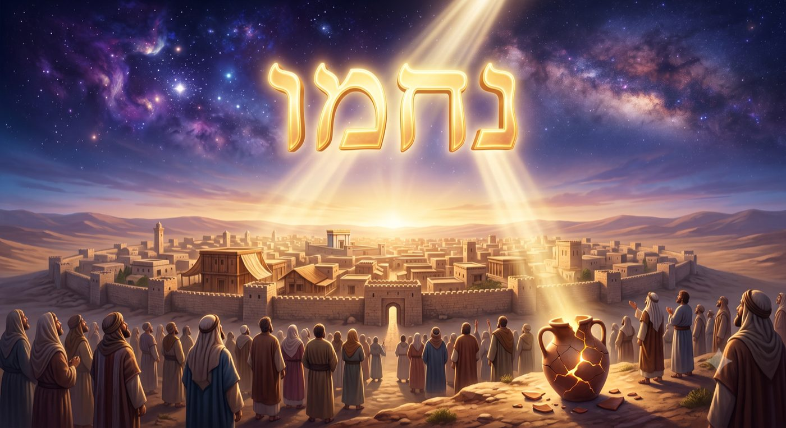

La prière, ou l'homme qui se refait un réceptacle
Pourquoi Moché, le plus grand des hommes de prière, adresse au Ciel cinq cent quinze prières pour entrer en terre promise et n'obtient qu'un « assez », comment le verbe même de la prière, en hébreu, se reflechit sur celui qui prie, et pourquoi la vraie réponse à toute tefila n'est pas que D.ieu change, mais que celui qui prie devienne un réceptacle capable de recevoir ce qui, déjà, l'attendait.
La paracha de Vaet'hanan s'ouvre sur un homme qui supplie. « וָאֶתְחַנַּן אֶל ה' בָּעֵת הַהִוא » (Devarim 3:23), « et je suppliai Hachem, en ce temps-là ». Moché est au terme de sa vie, face au Yarden qu'il ne franchira pas. Derrière lui, quarante années de désert ; devant lui, la terre promise, à portée du regard et interdite à ses pieds. Et il prie. Il ne réclame ni honneur, ni longévité, ni pardon d'une faute : il demande une seule chose, entrer, fût-ce un instant, en terre sainte, promis à ses ancêtres, au peuple, où coule le lait et le miel.
Le premier mot du récit, celui qui donne son nom à la paracha, mérite qu'on s'y arrête. Vaet'hanan, « et je suppliai », resonne avec sa racine 'hanan, la grâce, la faveur imméritée. Moché ne prie pas au nom de ses droits ; il implore une grâce. Et le Baal HaTourim, pesant les lettres du mot, y lit un nombre : וָאֶתְחַנַּן a pour valeur cinq cent quinze. Or cinq cent quinze est aussi, exactement, la valeur du mot tefila, la prière, quand on l'écrit dans sa forme pleine des consonnes, תפלה. Le mot qui ouvre la paracha n'est pas seulement le récit d'une prière : il est le nombre de la prière, et le nombre des prières que Moché prononça. Nos maîtres enseignent que Moché adressa au Ciel cinq cent quinze supplications pour obtenir d'entrer en terre d'Israël (Devarim Rabba 11:10), atteignant ainsi le maximum qu’un homme peut prier.
Rappellons que l'homme qui prie ici est le plus grand homme de prière de toute l'histoire. C'est Moché qui, après la faute du veau d'or, s'était tenu quarante jours et quarante nuits sur la montagne pour arracher au Ciel le pardon d'un peuple condamné, et qui l'avait obtenu (Chemot 32). C'est lui dont une seule prière, « אֵל נָא רְפָא נָא לָהּ », avait guéri sa sœur Miriam. Sa parole faisait plier les décrets, ouvrait la mer, sauvait des nations, et meme Pharaon lui même. Et voici que ce même homme, pour une requête toute personnelle et somme toute modeste, prie cinq cent quinze fois, et se heurte à un mur. La réponse tombe : « רַב לָךְ, אַל תּוֹסֶף דַּבֵּר אֵלַי עוֹד בַּדָּבָר הַזֶּה » (Devarim 3:26), « assez pour toi, ne continue plus à Me parler de cette affaire ». Le maître de la prière est éconduit.
Si la prière fléchit les décrets, comme toute la vie de Moché l'a prouvé, pourquoi celle-ci échoue-t-elle ? Et si elle peut échouer, à quoi bon prier ? Nos Sages ajoutent un détail vertigineux : ils enseignent qu'une prière de plus, la cinq cent seizième, eût emporté la décision, tant la force accumulée de ces supplications était devenue irrésistible ; et c'est précisément pour l'arrêter au seuil de cette victoire que le Ciel lui dit rav lakh, assez. Les prières de Moché ne manquaient donc pas de puissance. Elles marchaient, elles montaient, elles s'accumulaient mais la réponse fut pourtant un refus.
Ce refus porte un sens précis, que toute la paracha va déplier. Rachi, sur ce rav lakh, refuse d'y entendre un simple « cela suffit ». Il lit : « הַרְבֵּה מִזֶּה שָׁמוּר לְךָ », « bien plus que cela t'est réservé ». Le mot que nous traduisons par « assez » promet en vérité une abondance : tu as, mis en réserve pour toi, bien davantage que ce que tu réclames. Le refus, sous la plume de Rachi, n’est qu’un déplacement de la réponse de D.ieu : Moché demande une petite chose, entrer par ses pieds ; le Ciel lui répond qu'une chose bien plus grande l'attend, s'il consent à la recevoir autrement. Tout le paradoxe de la Tefila est là, dans cet écart entre ce que l'homme demande et ce que le Ciel tient prêt pour Lui.
Avec l'aide du Ciel, et de nos maîtres, nous verrons comment le verbe même de la prière précise un travail à faire sur soi, pourquoi la lumière d'en haut ne manque jamais, comment un décret peut etre aboli sans que D.ieu ne change, comment Moché fut exaucé tout autrement qu'il ne demandait, et ce que le Chabbat de Nahamou console en nous.
• Cinq cent quinze prières, un seul refus
• Prier, c'est se juger : le réceptacle du lehitpalel
• La lumière des prières ne manque jamais, le réceptacle si
• D.ieu ne change pas, celui qui prie se refait réceptacle
• La prière de Moché exaucé autrement : voir pour élargir le réceptacle
• Chabat Nahamou : la consolation, une prière qui refait le réceptacle
• Vers un monde tout entier devenu réceptacle de la prière
Pour comprendre ce qu'est une prière, il faut d'abord entendre le verbe en hébreu, car ce verbe est construit d'une manière déroutante. Prier, en hébreu, se dit lehitpalel, להתפלל. Loin d'être une forme active comme « demander » ou « implorer », c'est une forme réfléchie, ce que la grammaire nomme le hitpael, celle où l'action se retourne sur celui qui l'accomplit, comme dans lehitlabech, se vêtir, ou lehit'ha'zek, se renforcer. La racine, palal, signifie juger, trancher, évaluer. Lehitpalel ne veut donc pas dire, à la lettre, « adresser une requête », mais « se juger soi-même », se soumettre soi-même à l'examen.
Rabbi Chimchon Raphaël Hirsch, lisant cette racine, enseigne que prier, avant d'être une parole adressée à D.ieu, est une manière de se mesurer soi-même devant Lui. Celui qui prie ne cherche pas à modifier une volonté extérieure ; il se place sous un regard qui le juge, et ce regard, il le retourne sur lui-même. La prière est un tribunal intérieur où l'homme comparaît devant sa propre vérité, éclairée par la présence du Ciel. Là où le mot français « prière » suggère une supplique montant vers un trône, le mot hébreu décrit un mouvement inverse, une descente en soi, un travail de l'homme sur l'homme.
Ce renversement change entièrement la nature de l'exercice. Nous imaginons trop souvent la prière comme une négociation : un sujet démuni demande à un Roi puissant de changer Ses plans en sa faveur. Mais le verbe lui même refuse cette image. On ne prie pas quelqu'un d'autre à proprement parler, on se prie soi-même, on se juge, et par ce jugement on se refaçonne. Dans la prière, celui qui prie se transforme, et la décision du Ciel demeure. Et ce qui, en lui, se refaçonne, nos maîtres de la mystique lui donnent un nom : le keli, le réceptacle.
Le Talmud a d'ailleurs défini la prière par un mot qui dit exactement ce labeur. Interrogé sur le sens du verset qui ordonne de servir D.ieu « de tout votre cœur », il demande : « אֵיזוֹ הִיא עֲבוֹדָה שֶׁהִיא בַּלֵּב, הֱוֵי אוֹמֵר זוֹ תְּפִלָּה » (Ta'anit 2a), « quel est le service qui se fait dans le cœur ? C'est la prière ». La prière est une avoda, un service, un travail, et son atelier est le cœur, cette matière intérieure qu'il faut sans cesse retravailler pour qu'elle devienne un réceptacle digne de ce qu'on lui destine.
C'est ici que la paracha nous tend sa clé, car Vaet'hanan contient la prière des prières, celle que tout Juif récite deux fois par jour : le Chéma. « שְׁמַע יִשְׂרָאֵל ה' אֱ-לֹהֵינוּ ה' אֶחָד » (Devarim 6:4), « Écoute, Israël, Hachem est notre D.ieu, Hachem est Un ». Et le premier mot en dit déjà le secret : chema, écoute, c'est-à-dire reçois. Le Chéma est tout entier réception. On n'y réclame rien ; on y accepte le joug de la royauté du Ciel, on s'ouvre, on se rend disponible. Chaque matin et chaque soir, l'homme ne prie pas pour que D.ieu devienne Un, ce qu'Il est de toute éternité ; il se refaçonne lui-même autour de cette Unité, il refait le réceptacle de son cœur pour qu'il puisse contenir cette réalité, qu’Hachem est Elokenou, notre D.ieu, que nous devons servir.
Le verset qui suit le prouve : « וְאָהַבְתָּ אֵת ה' אֱ-לֹהֶיךָ בְּכָל לְבָבְךָ » (Devarim 6:5), « et tu aimeras Hachem ton D.ieu de tout ton cœur ». Rachi relève l'orthographe : levavekha, avec deux beit. Le redoublement enseigne, dit-il, qu'il faut aimer bichné yetsaréikha, avec tes deux penchants, le bon comme le mauvais. Aimer de tout son cœur, c'est refaçonner même le penchant obscur en réceptacle, jusqu'à ce que la part la plus rétive de nous-mêmes devienne un vase pour le service.
Le verbe de la prière est réfléchi : on ne fléchit pas le Ciel, on se juge et l'on se refaçonne soi-même en réceptacle, et le Chéma que Vaet'hanan nous révèle, est la prière par excellence, non pas une demande mais un cœur qui se refait chaque jour capable de recevoir.
Si la prière refaçonne le réceptacle, encore faut-il comprendre pourquoi le réceptacle est la question décisive, et non la source. Il faut pour cela poser la fondation métaphysique que nos maîtres ont léguée. Toute la réalité, enseignent-ils, est faite de deux ordres : des lumières, orot, et des réceptacles, kelim. Les lumières sont les émanations de l'Infini, la bonté qui se déverse, ce que la tradition nomme la chefa, l'influx. Les réceptacles sont les vases façonnés pour recueillir cette bonté et lui donner une forme, une mesure, une demeure.

La mystique du Ari Z”L ajoute ici une profondeur redoutable. Avant notre monde, enseigne-t-il dans le Etz 'Haïm, D.ieu émana le monde du Tohou, dont les réceptacles étaient trop étroits pour contenir l'intensité des lumières.Comme nous l’avons déjà expliqué, ils se brisèrent, ce que l’on nomme la chevirat hakelim, la brisure des vases, un processus voulu par le Créateur, afin que les éclats tombés dans la matérialité, puissent être relevés par l’Homme sa Créature.
Le travail de notre monde, le tikoun, la réparation, consiste ainsi essentiellement à rebâtir des réceptacles assez larges et assez solides pour recevoir la même lumière sans se rompre. La prière est dès lors, ce tikoun à l'échelle d'un homme : elle élargit et affermit le keli, pour qu'il tienne sous ce qu'on veut lui donner.
Or il faut peser une vérité que nous oublions sans cesse. Du côté de la lumière, il n'y a jamais de manque. La chefa ne tarit pas, ne diminue pas, ne se lasse pas. Le Ram'hal, dans le Dere’h Hachem, l'énonce avec force : le Créateur est bon, et le propre du bien est de se répandre. Son désir de donner est constant, entier, sans intermittence. La bonté d'en haut coule perpétuellement vers les mondes d'en bas, comme une source qui n'arrête jamais son eau. Ce qui varie, ce qui limite, ce qui parfois retient tout, ce n'est jamais la générosité de la source, c'est l'ouverture du réceptacle.
Le Nefech HaH'aim, l'ouvrage de Rabbi 'Haïm de Volozhin, développe cette idée dans sa deuxième porte, tout entière consacrée à la prière. La prière de l'homme n'ajoute rien à D.ieu et ne Lui apprend rien. Elle agit sur les canaux, sur les conduits par lesquels l'influx descend jusqu'à nous. Prier, c'est dégager un passage, élargir une ouverture, pour que la chefa qui attend déjà puisse enfin se déverser. L'homme ne fabrique pas la lumière ; il travaille le réceptacle qui la recevra.
Une maison dont on a tiré tous les volets en plein midi devient sombre, et pourtant le soleil, au-dehors, n'a rien perdu de sa lumière. L'obscurité de la pièce ne dit rien du soleil ; elle dit seulement l'état des volets. De même, une prière qui semble sans réponse ne dit rien d'un Ciel avare. Elle exprime un réceptacle encore fermé, pas encore prêt. Celui qui prie n'a pas à supplier le soleil de briller davantage, puisqu'il brille déjà sans mesure ; il a seulement à ouvrir ses propres volets.
On comprend alors le refus adressé à Moché sous un jour nouveau. Le Ciel ne lui refuse pas une lumière qu'Il posséderait et lui garderait pour Lui. Le bien que Moché réclame, l'entrée en terre, existe, il est prêt, il l'attend. Mais l'entrée « par les pieds », l'entrée physique et immédiate qu'il demande, n'est pas le réceptacle qui convient à ce qu'il doit vraiment recevoir, et un réceptacle pas encore prêt se briserait sous un don trop grand, comme les vases du Tohou. Le refus ne prive pas : il protège, et prépare une réception plus haute, un réceptacle plus vaste, que la paracha va dévoiler.
L’influx le chefa ne manque jamais et n'attend qu'un réceptacle : ce qui varie, c'est la capacité du receptacle à recevoir, et prier revient à ouvrir ses volets quand le soleil, lui, brille déjà sans mesure.
Une objection redoutable se dresse pourtant, et il faut l'affronter, car elle touche à la nature même de D.ieu. Si la prière obtient quelque chose, c'est bien qu'elle fait changer d'avis le Ciel, qu'elle Le fléchit, qu'elle transforme un « non » en « oui ». Or un D.ieu qui change d'avis serait un D.ieu imparfait, hésitant, sujet au repentir comme un homme. Mais la définition de D.ieu mis en bouche par le prophète l'interdit expressément : « כִּי אֲנִי ה' לֹא שָׁנִיתִי » (Malachi 3:6), « car Moi, Hachem, Je n'ai pas changé ». L'Éternel est immuable. Sa volonté ne connaît ni revirement ni remords. Comment, alors, la prière peut-elle « obtenir » quoi que ce soit ?
La réponse de nos maîtres est d'une profondeur qui renverse tout. Le décret, le gzar din, avait été prononcé sur un certain homme, disons l'homme X d'avant la prière. Mais la prière, en refaçonnant celui qui prie, en fait un autre homme Y. Le décret qui visait l'homme d'hier ne trouve plus, aujourd'hui, car un autre s'est levé à sa place, avec un réceptacle élargi et purifié. La sentence est demeurée, son sujet, lui, a changé. D.ieu n'a rien modifié de Sa volonté ; c'est celui qui prie qui s'est modifié lui-même, et la volonté divine, elle-même immuable, rencontrant désormais un être nouveau, produit sur lui un effet nouveau.
Le Mi’htav MeEliyahou, recueillant l'enseignement du moussar et de la 'hassidout, en donne l'image la plus nette. La rigueur du Ciel, comme la lumière du soleil, est constante. Elle durcit l'argile mais fait fondre la cire, cela ne veut pas dire qu'elle varie, mais que les matières qu'elle rencontre sont diffèrentes. Change le réceptacle, et la même lumière qui brûlait éclaire, la même rigueur qui condamnait relève.
On mesure alors ce que furent, en vérité, les cinq cent quinze prières de Moché. Elles ne cherchaient pas, et n'ont jamais cherché, à contraindre le Ciel, que D.ieu préserve. Elles refaçonnaient Moché lui-même, prière après prière, jusqu'à faire de lui un réceptacle toujours plus vaste, capable de recevoir davantage. Et c'est justement parce que ce travail approchait de son terme, parce qu'une prière de plus eût fait de Moché un réceptacle si vaste qu'aucun décret n'aurait plus tenu sur lui, que le Ciel l'arrête. Rav la’h : tu as déjà, par ces prières, atteint une grandeur telle que Je dois t'arrêter là, car ce que tu es devenu appelle non plus le petit don que tu demandes, mais un don immense que Je te réserve.
Le “refus”, ainsi compris, n'est plus l'échec de la prière de Moché mais le sommet. Ses prières ont si bien travaillé qu'elles l'ont porté au-delà de ce qu'il demandait. Il voulait entrer par la porte étroite de ses pieds, il est devenu, à force de prier, un réceptacle digne d'une porte bien plus large. Le Ciel ne lui ferme pas la porte d’Israel pour le priver, mais pour ne pas l'enfermer dans un gain trop petit au regard de ce qu'il est désormais capable de recevoir.
D.ieu ne change pas, sinon Il serait imparfait ; c'est celui qui prie qui change, et le décret, lui aussi immuable, ne tient plus sur le nouveau réceptacle : les cinq cent quinze prières de Moché, loin de fléchir le Ciel, ont faconné Moché.
Reste à savoir ce que le Ciel réservait à Moché, puisqu'il lui refusait l'entrée. La suite immédiate du verset le dit, et elle est le cœur de toute la paracha. Après le rav la’h, D.ieu ne renvoie pas Moché à son silence. Il lui ordonne autre chose : « עֲלֵה רֹאשׁ הַפִּסְגָּה וְשָׂא עֵינֶיךָ יָמָּה וְצָפֹנָה וְתֵימָנָה וּמִזְרָחָה וּרְאֵה בְעֵינֶיךָ » (Devarim 3:27), « monte au sommet de la Pisga (un monticule), lève les yeux vers l'ouest, le nord, le sud et l'est, et vois de tes yeux ». La porte des pieds se ferme, la porte des yeux s'ouvre. Moché n'entrera pas, mais il verra.
Il faut mesurer ce qu'est cette vision, car nos Sages refusent d'y voir un lot de consolation. Rachi, suivant le Midrach, enseigne que du haut de la Pisga, Moché ne contempla pas seulement l'étendue géographique du pays. Il vit la terre tout entière, dans son espace et dans son temps : les tribus installées dans leurs territoires, les guerres et les paix à venir, les générations qui s'y succéderaient, jusqu'aux temps les plus lointains et à la résurrection des morts. En un regard, Moché reçut le pays entier, sa totalité d'histoire et de secret, bien au-delà de la bande de terre que ses pieds auraient foulée.
Tel est l'exaucement véritable, et il éclaire toute modèle de prière. Moché avait demandé à recevoir la terre par le réceptacle de ses pieds ; le Ciel la lui donne par un réceptacle infiniment plus grand, celui du regard prophétique. Ses pieds n'auraient touché qu'un sol ; ses yeux ont saisi la Vérité. La paracha l'enseigne : la prière est toujours entendue, rarement de la manière dont on l'a formulée, presque toujours par un élargissement du réceptacle qui reçoit.
Nos vies connaissent cette loi, pour peu qu'on veuille la lire. Nous prions pour une chose précise, une guérison, une réussite, une porte qui s'ouvre, et il arrive que cette porte reste close. Nous en concluons trop vite que la prière n'a rien donné. Mais souvent, pendant que nous frappions à la porte fermée, une autre s'ouvrait en nous, plus large, que nous n'avions pas su demander. Le « non » à la requête était un « oui » à la personne. Ce que nos pieds n'ont pas obtenu, nos yeux, changés par l'épreuve et la prière, ont fini par le voir. La difficulté demeurait entière, et pourtant nous en étions sortis, parce que nous étions devenus assez vastes pour la contenir.
Il y a une continuité saisissante entre cette Pisga et le Chabbat qui précédait, celui de 'Hazon, la vision, le dernier avant Ticha BeAv. Ce Chabbat-là, enseigne la tradition, chaque âme se voit montrer de loin le Temple à venir, déjà bâti dans le caché. Moché au sommet de la Pisga est l'archétype de cette vision : il regarde, du dehors, un bien réel qu'il ne foulera pas encore, et ce regard est lui-même la véritable entrée. Voir de loin le bien déjà prêt, quand nos pieds ne peuvent l'atteindre, c'est déjà commencer à le recevoir, à condition que le réceptacle de nos yeux se soit assez élargi.
Moché n'entre pas de ses pieds, mais il voit de ses yeux toute la terre, dans son espace et dans son temps : la prière est exaucée autrement qu'elle ne demande, en élargissant le réceptacle de celui qui prie jusqu'à recevoir, par un canal inattendu, le bien qui l'attendait déjà.
Cette paracha ne tombe pas dans une semaine ordinaire. Vaet'hanan se lit toujours le Chabbat qui suit Ticha BeAv, le neuf Av, jour de la destruction des deux Temples. On l'appelle Chabbat Nahamou, le Chabbat de la consolation, car sa haftara ouvre les sept semaines de réconfort qui mènent à Roch Hachana. Et le prophète y prononce une parole que la tradition a placée au sommet de toutes les consolations : « נַחֲמוּ נַחֲמוּ עַמִּי יֹאמַר אֱ-לֹהֵיכֶם » (Yechayahou 40:1), « consolez, consolez Mon peuple, dit votre D.ieu ».

Une question se lève aussitôt, que nos maîtres n'ont pas laissée passer. Pourquoi ce redoublement, nahamou nahamou, consolez, consolez ? Et surtout, en quoi consiste cette consolation, puisque le Temple, cette semaine-là, n'est pas rebâti, les exilés ne sont pas rassemblés, la ruine demeure ? Rien, dans les faits, n'a changé. Les lendemains de Ticha BeAv des années précédents ressemblaient malheuresement à leurs veilles. Si la consolation ne défait pas la perte, que vient-elle donc faire ?
La réponse tient dans tout ce que nous avons appris de la prière, car la consolation obéit à la même loi. Elle laisse le fait intact et transforme celui qui l'éprouve. Nahamou ne dit pas au Ciel de reconstruire les pierres ; il dit à Israël de se refaire, de redevenir capable de recevoir un réconfort qui, lui, est déjà prêt. La consolation, comme la chefa, attend depuis toujours ; ce qui manque, c'est le réceptacle de l'endeuillé, brisé par le deuil, incapable encore de l'accueillir. Et il me semble que le mot se redouble parce que ce réceptacle doit être refait à deux reprises : une première fois pour supporter la perte sans se rompre, une seconde pour recevoir le bien qui vient. C'est une double consolation pour un réceptacle deux fois remodelé.
Le Chéma revient alors, et il n'est pas un hasard que Vaet'hanan, la paracha de Nahamou, soit aussi celle du Chéma. Après les larmes de Ticha BeAv, Israël redit « Hachem est notre D.ieu, Hachem est Un », et il dit e'had, Un, c'est-à-dire le Même, l'inchangé, Celui dont Malachi affirmait « Je n'ai pas changé ». Or c'est justement parce que D.ieu ne change pas que l'homme, lui, peut se changer. Sur un roc immobile on peut rebâtir ; sur une lumière constante on peut refaire un réceptacle. Et chema, écoute, reçois : après avoir pleuré, Israël se remet à recevoir, il rouvre le réceptacle de son cœur, il consent à être consolé. La consolation entre par l'oreille qui, de nouveau, écoute, et comprend.
Ici se referme la boucle ouverte, à Ticha BeAv, sur le livre des Lamentations. Le mot des ruines, Ei’ha, portait, sous ses consonnes, la première question du jardin d'Éden, Ayéka, « où es-tu ? ». D.ieu cherchait l'homme caché et n'obtenait pas de réponse. La consolation de Nahamou est précisément la réponse. Non pas que D.ieu revienne en changeant Sa face, mais que l'endeuillé, refaçonné par le deuil traversé et par la prière, redevient enfin capable d'entendre le « me voici » qui l'attendait derrière le voile. Le « où es-tu ? » demeurait sans réponse tant que le réceptacle était clos, le réceptacle refait, l'homme répond, et la consolation qui l'attendait depuis toujours peut enfin descendre.
Nahamou laisse la ruine debout et refait l'endeuillé : la consolation, comme la prière, travaille le réceptacle plutôt que le fait, et le Chéma redit après les larmes que le Un qui ne change pas est justement Celui sur qui l'on s'appuie pour se refaire capable de recevoir.
Si chaque prière élargit un peu le réceptacle de celui qui prie, et si chaque consolation le refait, alors l'histoire tout entière est un long travail de réceptacle, un monde qui apprend, génération après génération, à s'ouvrir à une lumière qui n'a jamais cessé de couler. Nous n'attendons pas que le Ciel se décide enfin à donner, car le Ciel donne sans relâche depuis le commencement. Nous travaillons à devenir le réceptacle où ce don pourra tenir.
La délivrance, chez les prophètes, se dit précisément ainsi : une terre enfin capable de recevoir, plutôt qu'une lumière accrue. « כִּי מָלְאָה הָאָרֶץ דֵּעָה אֶת ה' כַּמַּיִם לַיָּם מְכַסִּים » (Yechayahou 11:9), « car la terre sera remplie de la connaissance de Hachem comme les eaux recouvrent le fond des mers ». La lumière ne sera pas plus grande qu'aujourd'hui ; c'est la terre qui, devenue réceptacle, en sera remplie. Le Temple que Moché entrevit du haut de la Pisga, celui que chaque âme aperçoit de loin le Chabbat de la vision, est déjà bâti dans le monde spirituel. Il attend simplement un monde assez large et robuste pour l'accueillir.
Ainsi les cinq cent quinze prières de Moché ne furent pas perdues au bord du Yarden : la prière refusée à un homme, à la porte de la terre, sera la prière exaucée d'un peuple entier, lorsque tout Israël foulera enfin la terre que Moché avait préparé par sa Vision.
| נַחֲמוּ נַחֲמוּ עַמִּי יֹאמַר אֱ-לֹהֵיכֶם | Consolez, consolez Mon peuple, dit votre D.ieu (Yechayahou 40:1) |
|---|
Chabbat Chalom !
Par B.A., à Saint-Mandé, Chabbat Na'hamou 5786 / août 2026
Puisse être la volonté du Ciel que nous apprenions à prier non pour fléchir le Ciel, qui donne déjà sans mesure, mais pour nous refaire nous-mêmes, et que chaque Chéma élargisse en nous le réceptacle de ce que D.ieu veut déjà nous donner.
Et puissions-nous, en ce temps de Nahamou, devenir un peuple assez vaste pour recevoir la consolation déjà prête, jusqu'au jour où toute la terre, devenue réceptacle, sera remplie de la lumière qui n'a jamais cessé de couler.
| Torah | Talmud |
|---|---|
Devarim 3:23, vaet'hanan, la supplication de Moché ; 3:26, rav lakh, « assez pour toi » ; 3:27, aleh rosh haPisga et ourhé vééné'ha, monter voir de ses yeux ; Devarim 6:4-5, le Chéma et ve'ahavta be'hol levavekha ; Chemot 32, Moché qui plaide quarante jours pour le veau d'or ; Malachi 3:6, ani Hachem lo chaniti, « Je n'ai pas changé » ; Yechayahou 40:1, nahamou nahamou ; Yechayahou 11:9, la terre remplie de connaissance. Michna et Rishonim Baal HaTourim sur Devarim 3:23, vaet'hanan = 515 = tefila ; Rachi sur Devarim 3:26, rav lakh, « bien plus que cela t'est réservé » ; Rachi sur Devarim 3:27, Moché voit toute la terre et toutes ses générations ; Rachi sur Devarim 6:5, aimer avec les deux penchants. |
Bera'hot 32b, Moché prie jusqu'au rav lakh ; Ta'anit 2a, avoda shebalev, zo tefila, le service du cœur est la prière. Mystique et Hassidout Etz 'Haïm (Arizal), la brisure des vases du Tohou (chevirat hakelim) et le tikoun des réceptacles ; Ram'hal, Derekh Hachem, la bonté constante et le désir de donner ; Nefech HaH'aim (Rabbi 'Haïm de Volozhin), Chaar II, la prière qui ouvre les canaux de la chefa ; le Michtav MeEliyahou, le décret qui ne tient plus sur celui qui prie devenu autre ; Devarim Rabba 11:10, les cinq cent quinze prières de Moché ; Rabbi Chimchon Raphaël Hirsch sur lehitpalel, se juger soi-même. |